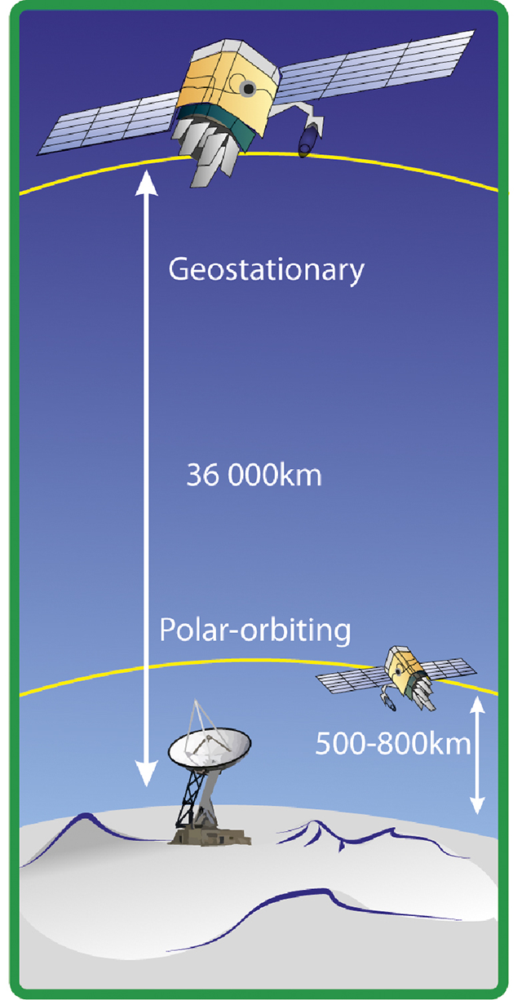
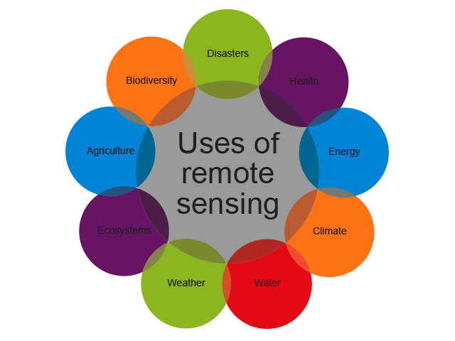

Satellites are placed in orbit above Earth at different heights depending on their use.
Polar-orbiting satellites are placed 500–800 km above Earth. It takes approximately 99 minutes for these satellites to make a single orbit. These are also called lower-orbiting satellites.
Geostationary or higher-altitude satellites are placed at 36 000 km above Earth and usually hover over the same area. Their orbit coincides with the rotation of Earth so they orbit once every 24 hours. Weather-observing satellites are the best example of these.

Satellites orbiting Earth 
Uses of remote sensing